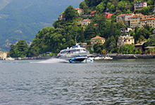

Выходные на озере Комо
Озеро Комо находится чуть северней Милана, в часе езды на электричке от Милана. Это – горное озеро, причем высота окружающих его вершин с продвижением на север ощутимо повышается: от 800-м на южной стороне озера до 2400 м на северной. Состоит Комо из трех узких рукавов - трех ущелий, соединяющихся в одной точке...
Комо, Италия